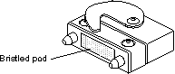

Operating Documentation
Direction 5114043-800, Rev# 9
LightSpeed 3.X Service Methods (Advanced)
Operating Documentation |
| Most of the procedures listed in this module are meant to be performed only on the original Octane computer (a.k.a., “Octane1”). For replacement information specific to the Octane2 computer, please refer to Octane2 Replacements - H3 Console. | |
After removing or installing any component, verify that the CPOP and Light Bar LEDs provide the expected values. See the “Light Bar LEDs” and “CPOP Connector LEDs” portions of Power-On Tests - Octane and Octane2.
When replacing components in the Octane/OC, it may also be necessary to press the Reset Button on the front panel of the Octane to restart the OC. (Refer to Host Computer Theory - Octane/Octane2, for button locations).
If you experience problems after replacing a FRU, please refer to Host Computer - Octane/Octane2 Troubleshooting.
To avoid damaging the system module, PCI module or XIO modules, follow these guidelines whenever these items are outside the computer.
Do not touch the pads of the compression connector with anything.
Whenever a module or board is not in the chassis, put the protective cap over the compression connector and put the module or board in an antistatic bag.
Before laying a board on a surface, make sure that the surface is free of dust, lint, powder, metal filings, oil, water, and so on.
Do not blow dust, dirt, or powder anywhere near a board when it is not inside its protective bag.
Do not use a cleaning product that contains any of the following ingredients: halogenated hydrocarbons, aromatic hydrocarbons, ethers, sulphur, ketones, or solvents of any kind. These substances cause irreparable damage to the connector's surface.
A compression connector should never need to be cleaned if you keep the protective cover on whenever the module or board is not in the chassis.
If you must clean it, hold a can of dry compressed inert gas so that the tip of the applicator is one or two inches away from the first row of pads at the topmost edge of the connector. Maintain a slight angle so that the spray hits each pad and flows downward.
Do not allow the applicator to touch the pads. Start spraying. As you spray, move the spray along the side of the connector until the entire first row has been sprayed. Move down to the next row. Repeat until all rows have been sprayed.
In order to achieve high performance, the OCTANE workstation uses compression connectors to connect the system module, the PCI module and the XIO modules to the frontplane circuit board.
Each compression connector has 96 pads and two halves. One half is on the frontplane of the chassis; the other is on the system module, PCI module, or XIO board. Each pad on a frontplane connector is a flat gold-plated surface. Each pad on the system module, PCI module or XIO board is composed of hundreds of tiny bristles. When a bristled pad is pressed into a gold-plated pad, a connection is created for one signal.
Illustration 1: Control Connector

The bristled pads attract and hold dust, lint, grease, powder, and dirt. The presence of these substances clogs or damages the bristles and prevents them from making proper contact with the system's frontplane.
The modules listed below provide detailed instructions for replacing components within the Octane1 computer.
(see also: System ID Module Replacement - Octane1)
Octane Frontplane Module Replacement (includes Power Supply Fan)